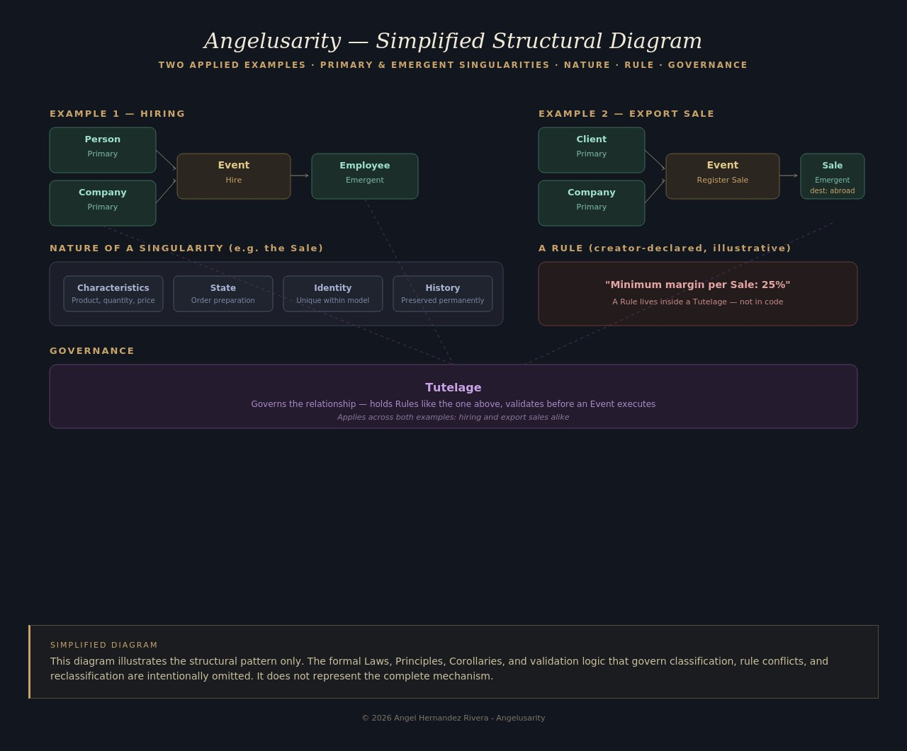

Angelusarity is a conversational mechanism that discovers, together with whoever is building an application, the structure that reality needs — without requiring them to know how to model data, and without letting them contradict their own stated purpose.
Angelusarity does not generate applications from a description. It governs the coherence of a reality while that reality is being discovered — and it never lets the creator build something that contradicts what they themselves said they wanted.
What exists?
Its unit is the Singularity — a unique, identifiable existence: a Person, a Company, a Product.
What changes reality?
Its unit is the Event — the transformation that modifies the model: Hire, Sell, Register.
What preserves order?
Its unit is the Tutelage — the protection and preservation of a relationship between existences.

This diagram omits the formal Laws, Principles, and validation logic — it illustrates the structural pattern only.
The purpose declared by the creator isn't documented and archived — it becomes a constraint the system verifies at every modeling decision, and can reject if it contradicts it.
The system never decides alone how deep to take a concept. It proposes, exemplifies, and lets the creator confirm the limit, level by level.
When the creator's reality changes, the structure reconfigures automatically — but data already captured remains intact as historical record.
Angelusarity, yesterday we designed the mold for round, solid concrete posts. Today the market changed completely — the client now wants them conical, with a hollow channel for electrical cabling. How do you absorb a hit like this without cracking?
Before we worry about the shape, tell me: is it still, at its core, the same reason you're building it — an element meant to bear load and release cleanly from the mold?
Yes. That never changed.
Then the Post is still the same Post — what changes is how it looks, not what it is. Now, put yourself at the tip with me: 15 cm total diameter, minus 5 for the duct. How much wall is left?
...5 centimeters. That's half of what I asked for myself.
The dialogue continues — testing the rule, resolving the contradiction, and comparing the mechanism against a traditional validation approach.
This theory is proven on paper, through a rigorous eight-session dialectical exercise and one real application case fully resolved through structured simulation. Its validation through real implementation and use remains pending — that is, honestly, the next step.